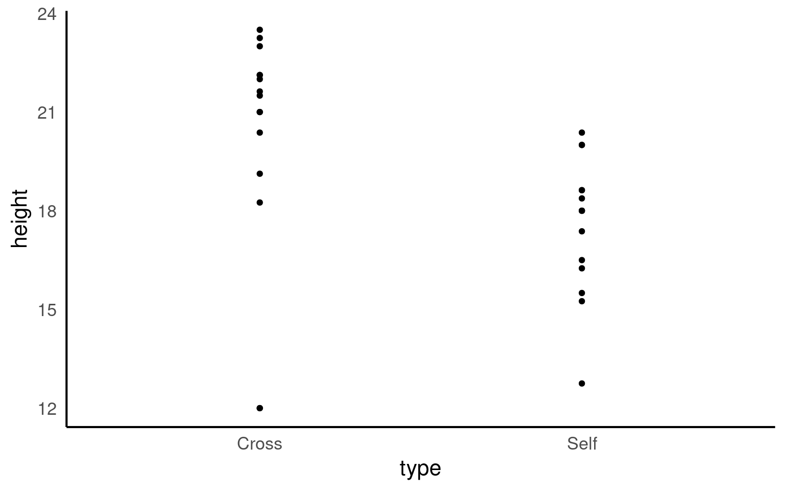
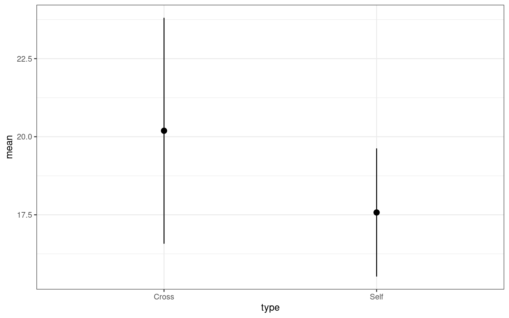
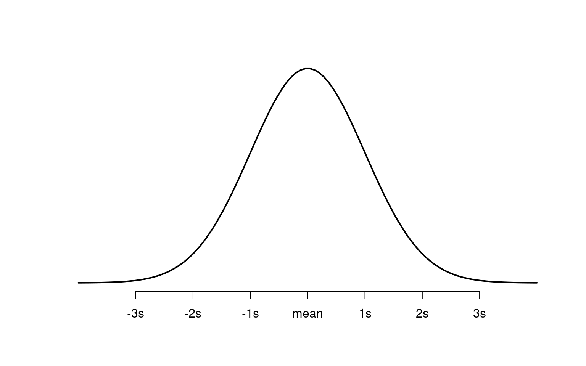
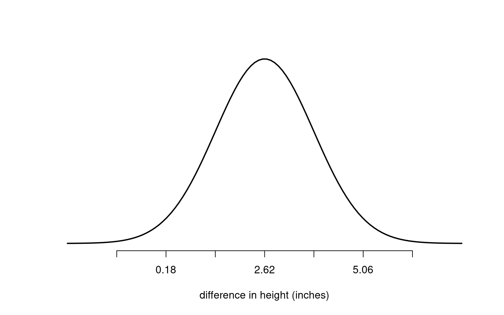

5 Inferential statistics
In this chapter will be focusing more on statistics. We actually did quite a lot of descriptive statistics work previously. Every time we summarised or described our data, by calculating a mean, median, standard deviation, frequency/count, or distribution we were carrying out descriptive statistics that helped us understand our data better.
We are building on this to develop our skills in inferential statistics. Inferential statistics allow us to make generalisations - taking a descriptive statistics from our data such as the sample mean, and using it to say something about a population parameter (i.e. the population mean).
For example we might measure the measure the heights of some plants that have been outcrossed and inbred and make some summaries and figures to construct an average difference in height (this is descriptive). Or we could use this to produce some estimates of the general effect of outcrossing vs inbreeding on plant heights (this is inferential).
5.1 Darwin’s maize data
Loss of genetic diversity is an important issue in the conservation of species. Declines in population size due to over exploitation, habitat fragmentation lead to loss of genetic diversity. Even populations restored to viable numbers through conservation efforts may suffer from continued loss of population fitness because of inbreeding depression.
Charles Darwin even wrote a book on the subject “The Effects of Cross and Self-Fertilisation in the Vegetable Kingdom”. In this he describes how he produced seeds of maize (Zea mays) that were fertilised with pollen from the same individual or from a different plant. The height of the seedlings that were produced from these were then measured as a proxy for their evolutionary fitness.
Darwin wanted to know whether inbreeding reduced the fitness of the selfed plants - this was his hypothesis. The data we are going to use today is from Darwin’s original dataset.
Set up a new project
Have you got separate subfolders set up within your project?
You should set up a script to put your work into - use this to write instructions and store comments.
Use the File > New Script menu item and select an R Script.
5.2 Activity 1: Carry out some basic exploratory data analysis
The first thing we should know by now is to always start by exploring our data. If you want to stretch yourself, see if you can perform a basic data check without prompts.
# check the structure of the data
glimpse(darwin)
# check data is in a tidy format
head(darwin)
# check variable names
colnames(darwin)
# clean up column names
darwin <- janitor::clean_names(darwin)
# check for duplication
darwin |>
duplicated() |>
sum()
# check for typos - by looking at impossible values
darwin |>
summarise(min=min(height, na.rm=TRUE),
max=max(height, na.rm=TRUE))
# check for typos by looking at distinct characters/values
darwin |>
distinct(pair)
darwin |>
distinct(type)
# missing values
darwin |>
is.na() |>
sum()
# quick summary
summary(darwin)5.2.1 Visualisation
Now seems like a good time for our first data visualisation.

The graph clearly shows that the average height of the ‘crossed’ plants is greater than that of the ‘selfed’ plants. But we need to investigate further in order to determine whether the signal (any apparent differences in mean values) is greater than the level of noise (variance within the different groups).
The variance appears to be roughly similar between the two groups - though by making a graph we can now clearly see that in the crossed group, there is a potential outlier with a value of 12.
5.2.2 Comparing groups
As we have seen previously we can use various tidy functions to determine the mean and standard deviations of our groups.
| type | mean | sd |
|---|---|---|
| Cross | 20.19167 | 3.616945 |
| Self | 17.57500 | 2.051676 |
You should (re)familiarise yourself with how (and why) we calculate standard deviation.
Summary statistics like these could be presented as figures or tables. We normally reserve tables for very simple sets of numbers, and this instance we could present both.
# make a new object
darwin_summary <-darwin |>
group_by(type) |>
summarise(mean=mean(height),
sd=sd(height))
# make a summary plot
darwin_summary |>
ggplot(aes(x=type,
y=mean))+
geom_pointrange(aes(ymin=mean-sd, ymax=mean+sd))+
theme_bw()
# put this at top of script
library(kableExtra)
# use kable extra functions to make a nice table (could be replaced with kable() if needed)
darwin_summary |>
kbl(caption="Summary statistics of crossed and selfed maize plants") |>
kable_styling(bootstrap_options = "striped", full_width = T, position = "left")| type | mean | sd |
|---|---|---|
| Cross | 20.19167 | 3.616945 |
| Self | 17.57500 | 2.051676 |
Descriptive statistics and careful data checking are often skipped steps in the rush to answer the big questions. However, description is an essential part of early phase analysis.
5.3 Estimation
In the section above we concentrated on description. But the hypothesis Darwin aimed to test was whether ‘inbreeding reduced the fitness of the selfed plants’. To do this we will use the height of the plants as a proxy for fitness and explicitly address whether there is a difference in the mean heights of the plants between these two groups.
Our goal is to:
Estimate the mean heights of the plants in these two groups
Estimate the mean difference in heights between these two groups
Quantify our confidence in these differences
5.3.1 Differences between groups
Darwin’s data used match pairs - each pair shared one parent. So that in pair 1 the same parent plant was either ‘selfed’ or ‘crossed’ to produce offspring. This is a powerful approach to experimental design, as it means that we can look at the differences in heights across each of the 15 pairs of plants - rather than having to infer differences from two randomly derived groups.
In order to calculate the differences in height between each pair we need to do some data wrangling with tidyr::pivot_wider() {Appendix C} and calculations with mutate.
5.4 Activity 2: Differences
Create a new column called difference with the height of the selfed plant in each pair subtracted from the crossed plant.
We now have the difference in height for each pair, we can use this to calculate the mean difference in heights between paired plants, and the amount of variance (as standard deviation)
difference_summary <- darwin_wide |>
summarise(mean=mean(difference),
sd=sd(difference),
n=n())
difference_summary| mean | sd | n |
|---|---|---|
| 2.616667 | 4.718047 | 15 |
What we have just calculated is the average difference in height between these groups of plants and the standard deviation of the difference Moving forward we will be working a lot with estimating our confidence in differences between groups
5.4.1 Standard error of the difference
Remember standard deviation is a descriptive statistic - it measures the variance within our dataset - e.g. how closely do datapoints fit to the mean. However for inferential statistics we are more interested in our confidence in our estimation of the mean. This is where standard error comes in.
We can think of error as a standard deviation of the mean. The mean we have calculated is an estimate based on one sample of data. We would expect that if we sampled another 30 plants these would have a different sample mean. Standard error describes the variability we would expect among sample means if we repeated this experiment many times. So we can think of it as a measure of the confidence we have in our estimate of a true population mean.
\[ SE = \frac{s}{\sqrt(n)} \]
As sample size increases the standard error should reduce - reflecting an increasing confidence in our estimate.
Here is a great explainer video on Standard Error
And try this Shiny App on Sampling
We can calculate the standard error for our sample by applying this equation to our difference_summary object, can you complete this?
Our estimate of the mean is not really very useful without an accompanying measuring of uncertainty like the standard error, in fact estimates of averages or differences should always be accompanied by their measure of uncertainty.
5.4.2 Activity 3: Communicate
With the information above, how would you present a short sentence describing the average different in height?
… the average difference in height was 2.62 ± 1.22 inches (mean ± SE).
5.5 Uncertainty
With a mean and standard error of the difference in heights between inbred and crossed plants - how do we work out how much confidence we have in their being a difference between our population means?
Standard error is a measure of uncertainty, the larger the standard error the more noise around our data and the more uncertainty we have. The smaller the standard error the more confidence we can have that our difference in means is real.
Null hypothesis - there is no difference in the mean height of self vs crossed plants
Alternate hypothesis - inbreeding reduces the fitness of the selfed plants, observed as selfed plants on average being smaller than crossed plants
A statistical way of thinking about our inferences is in terms of confidence around keeping or rejecting the null hypothesis. The (alternate) hypothesis is simply one that contradicts the null.
When we decide whether we have enough confidence that a difference is real (e.g. we could reject the null hypothesis), we cannot ever be 100% certain that this isn’t a false positive (also known as a Type I error). More on this later
5.5.1 Normal distribution
The normal distribution is a way to describe data that forms a bell-shaped curve when plotted on a graph. Most of the data points are clustered around the middle, with fewer data points as you move farther from the center in either direction. The middle point is the average (or mean), and it represents the most common value in the data set.
What is the normal distribution
Now, standard deviation tells you how spread out the data points are from the mean. A small standard deviation means the data points are close to the mean, so the curve will be tall and narrow. A large standard deviation means the data points are more spread out, making the curve wider and flatter.
In short, the standard deviation measures how much variation there is in the data from the average value.
Large standard deviations produce wide bell curves, with short peaks. Small standard deviations produce narrow bell curves with tall peaks.
The bell curve occurs frequently in nature, most circumstances where we can think of a continuous measure coming from a population e.g. human mass, penguin flipper lengths or plant heights.
As a probability distribution, the area within the curve sums to the whole population (e.g. the probability that the curve contains every possible measurement is 1). Known proportions of the curve lie within certain distances from the centre e.g. 67.8% of observations should have values within one standard deviation of the mean. 95% of observations should have values within two standard deviations of the mean. This idealised normal distribution is presented below:

How do we convert this information into how likely we are to observe a difference of 2.62 inches in plant heights if the ‘true’ difference between crosses and selfed plants is zero?
The central limit theorem states that if you have a population with mean and standard deviation, and take sufficiently large random samples from the population, then the distribution of the sample means will be approximately normally distributed. Standard error then is our measure of variability around our sample mean, and we will assume that we can apply a normal distribution to our ability to estimate the mean.
So if we now center our bell curve on the estimate of the mean (2.62), then just over two thirds of the area under the curve is ± 1.22 inches. 95% of it will be within ± 2 standard errors, and 99.8% will be within ± 3 standard errors.

Taking a look at this figure we can ask ourselves where is zero on our normal distribution? One way to think about this is, if the true difference between our plant groups is zero, how surprising is it that we estimated a difference between the groups of 2.62 inches?
If zero was close to the center of the bell curve, then our observed mean would not be surprising at all (if the null hypothesis is true). However in this case it is not in the middle of the bell. It falls in the left-hand tail, and it is > than two standard deviations from our estimated mean.
We can describe this in two ways:
We estimate that if we ran this experiment 100 times then >95 of our experiments would estimate a mean difference between our plant groups that is > 0.
This is also usually taken as the minimum threshold needed to reject a null hypothesis. We can think of the probability of estimating this mean difference, if our true mean difference was zero, as p < 0.05.
You will probably be very used to a threshold for null hypothesis rejection of \(\alpha\) = 0.05, but this only the very lowest level of confidence at which we can pass a statistical test. If we increase the severity of our test so that the minimum we require is \(\alpha\) = 0.001 or 99% confidence, we can see that we no longer believe we have enough confidence to reject the null hypothesis (0 is within 3 s.d. of our estimated mean).
5.5.2 Confidence Intervals
Because ± 2 standard errors covers the central 95% of the area under the normal curve, we refer to this as our 95% confidence interval. We can calculate confidence intervals for any level, but commonly we refer to standard error (68% CI), 95% and 99%.
We can work out the 95% confidence interval range of our estimated mean as follows:
A common mistake it to state that we are 95% confident that the ‘true’ mean lies within our interval. But technically it refers to the fact that if we kept running this experiment again and again the intervals we calculate would capture the true mean in 95% of experiments. So really we are saying that we are confident we would capture the true mean in 95% of our experiments.
How might we write this up?
The maize plants that have been cross pollinated were taller on average than the self-pollinated plants, with a mean difference in height of 2.62 [0.18, 5.06] inches (mean [95% CI]).
Note that because it is possible to generate multiple types of average and confidence interval, we clearly state them in our write up. The same would be true if you were presenting the standard error (± S.E.) or the standard deviation (± S.D.) or a median and interquartile range (median [± IQR]).
The above is a good example of a simple but clear write-up because it clearly describes the direction of the difference, the amount and the error in our estimate.
5.6 Summary
Statistics is all about trying to interpret whether the signal (of a difference or trend) is stronger than the amount of noise (variability). In a sample the standard deviation is a strong choice for estimating this within a dataset. The standard deviation of the sampling distribution of the mean is known as the standard error. The standard error (of the mean) is a measure of the precision we have in our estimate of the mean. Thanks to the central limit theorem and normal distribution we can use the variability in our estimate to calculate confidence intervals, and decide whether our signal of an effect is strong enough to reject a null hypothesis (of no effect or no difference).
Next we will start working with linear models - this approach allows us to estimate means and intervals in a more sophisticated (and automated) way.